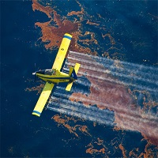

About
AeroNomad
-
Our Humble Beginnings
AeroNomad Came out in existance when there is no inspiring project in aerospace sector to inspire the coming generation of engineer where the budding engineer & the industry honed expert can collaborate together to work on extraordinary machine & exchange their knowledge. To defy next we came with LSA(Light Sports Aircraft) program.
-

Don't map! Do Remote Sensing
We started Utra Light UAV program For remote sensing the forest & Water bodies to understand the current Water & Forest conditions around the globe. whole mission of Ultralight UAV Program is to bring the next remote sensing platform in existance where all scientific & engineering community can work together to bring the new insight on the forest & water bodies & their species conditions using AI.
-
Started Baker program
To fund the project we started AI & Scientific Computing as baker program to give the oppurtunity to individual & organization to be part of our project to be as contributor to get work experience & skills development while working on any of the aeronomad program. Whole idea behind baker program is crowdsourcing the fund required to meets the program cost & allow the baker to be as contributor on the AeroNomad project. We are having great sponsors proposal & association with us will bring a huge impact to the brand image & will bring a impact to human psyche on all demographic space.
-
Be Part
Of Our
Story!
Our Amazing Team
AeroNomad
Amrit Kumar
Advance Material Designer,Metallurgical & Material Engineering, IIT Kharagpur
Aasto Ashrita Aastikae
Cheif Aircraft Designer
Kumar Vimal
Lead Software Architect